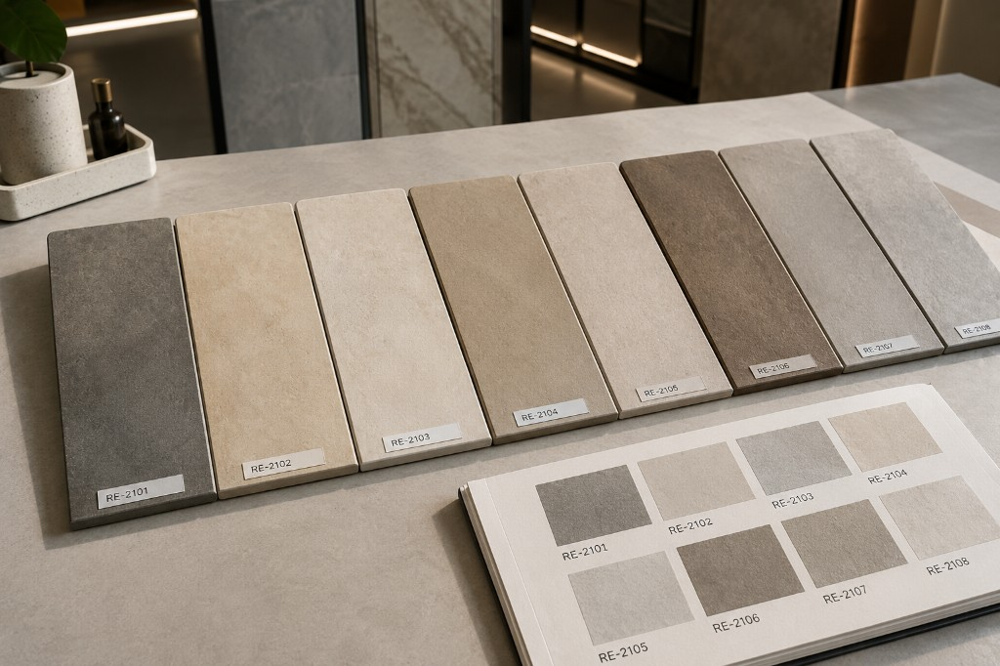
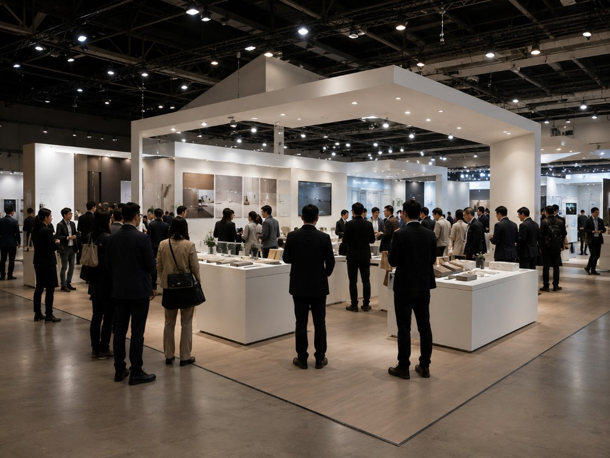
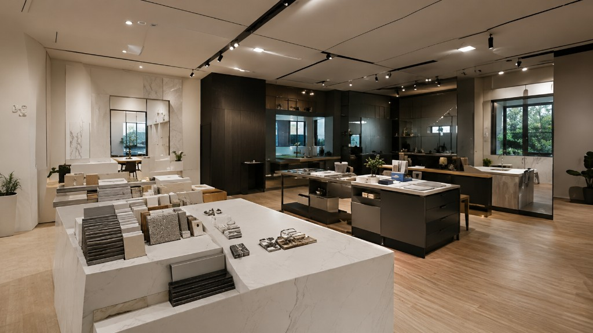
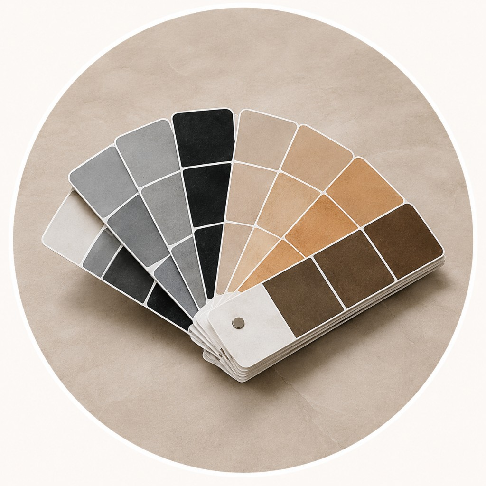
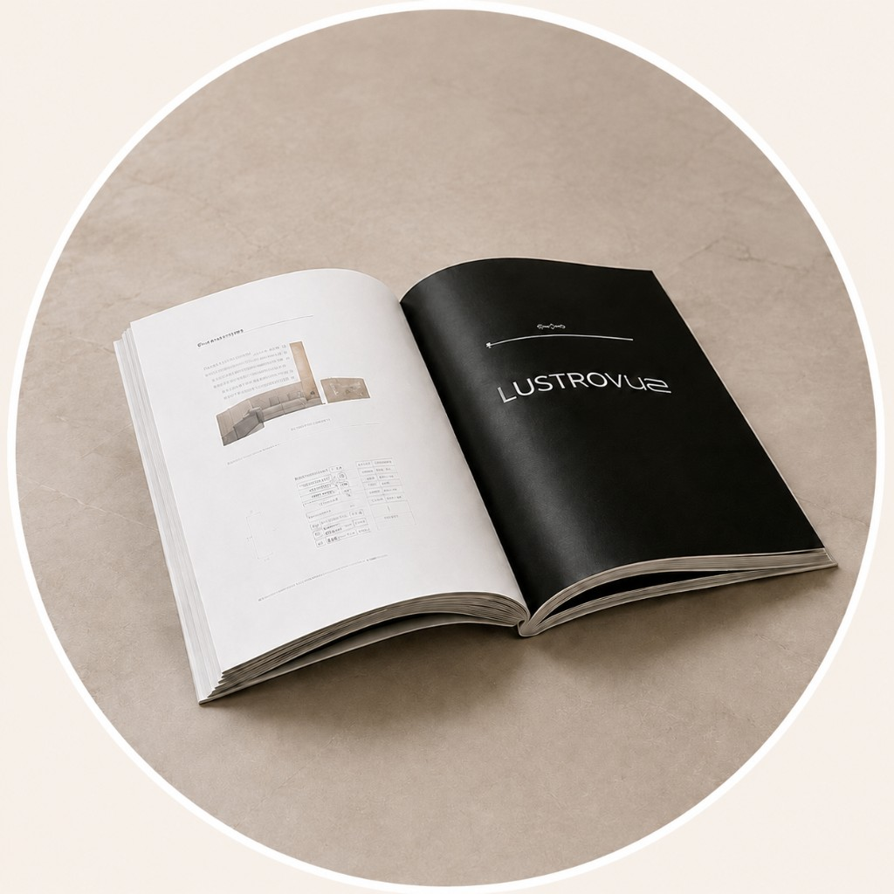
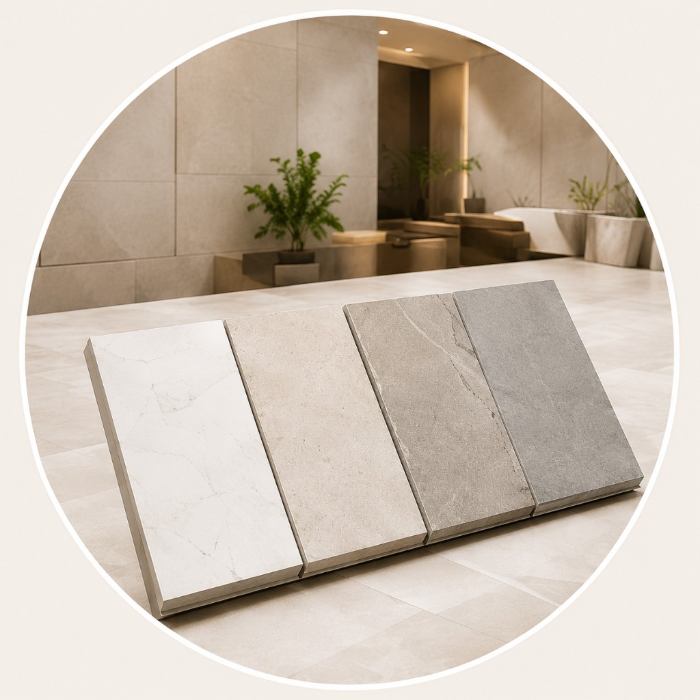
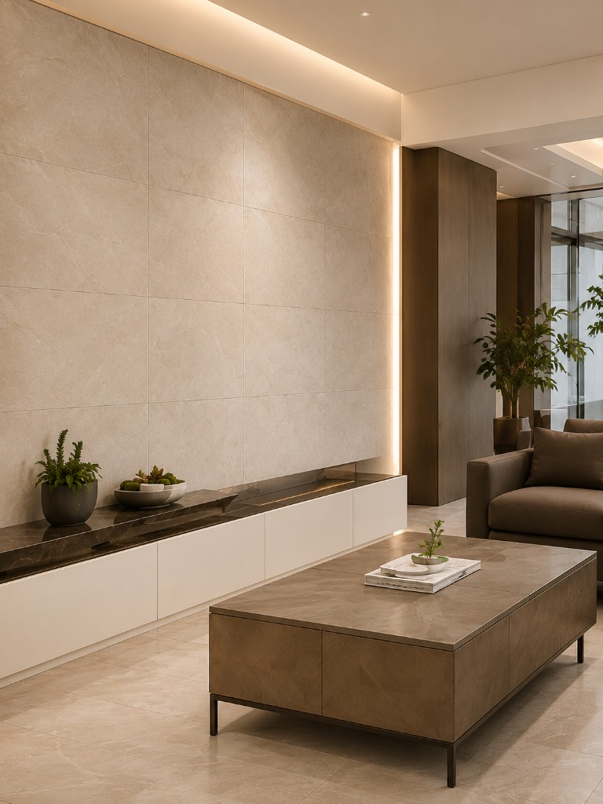
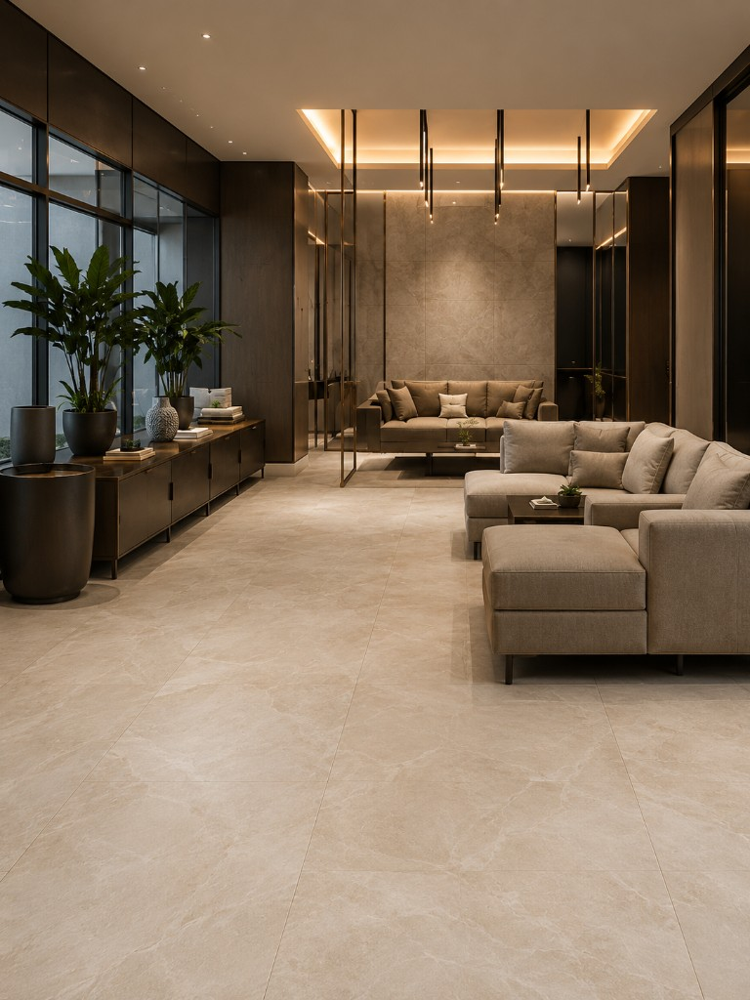
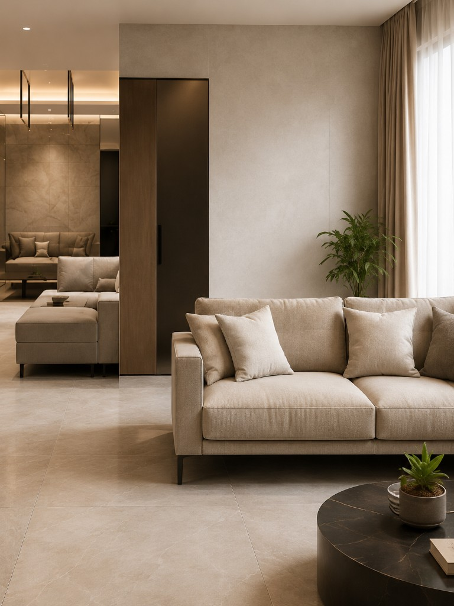

01
客戶難以想像
色票、型錄與口述難以還原真實空間中的質感、比例與光線。

多數展示仍停在「看得到」，卻做不到「看得懂、比得出、敢下單」。
色票、型錄與口述難以還原真實空間中的質感、比例與光線。
只能看、不能操作，缺少參與感，也難留下可帶走的記憶點。
反覆確認規格、等樣品與報價，現場與後續溝通成本高。
現場內容無法對齊客戶需求與預算，難以推進到訂單與導流。
依產業與通路型態，選擇模組或客製整合，快速對齊展示目標。
從數位內容、互動展示到即時預覽，把「說明規格」變成「看見結果」。
把建材、規格與應用情境整理成
可搜尋、可延伸的數位內容。
觸控一鍵將材質與配置
帶入示範牆或情境空間。
在同一畫面中預覽光線、
材質與尺度差異。
把抽象規格轉成
看得到、比得懂的結果畫面。
縮短溝通回合，提升現場留客
與後續跟進效率。
從建材展、品牌活動到門市與業務簡報，同一套邏輯放大展示說服力。

把材質放回真實尺度與光線中比對，降低想像落差、提升詢問深度。

用互動與即時預覽留住腳步，讓重點技術與應用情境一眼被理解。

讓客戶在店內就能完成材質比對與風格確認，縮短猶豫與來回次數。
業務在客戶現場用同一套互動話術與畫面，對齊決策者與設計端。
從展示產品

色票
型錄／DM
產品照片到展示結果

我家的牆
我家的地板
我的空間不用想像，直接看見最終效果
導入互動展示前，品牌與通路端最常確認的項目。